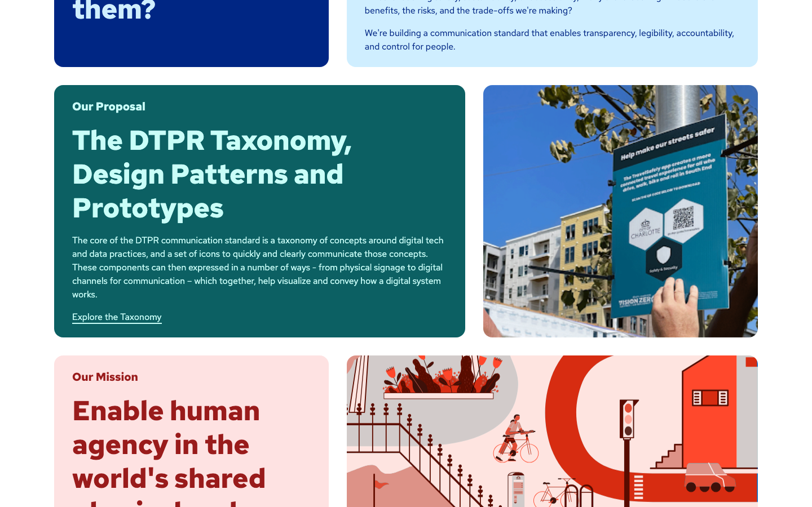
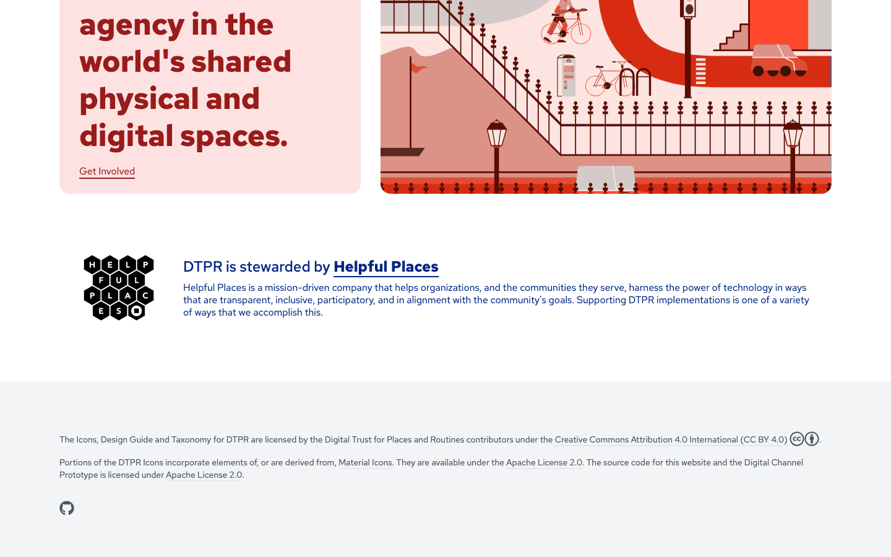
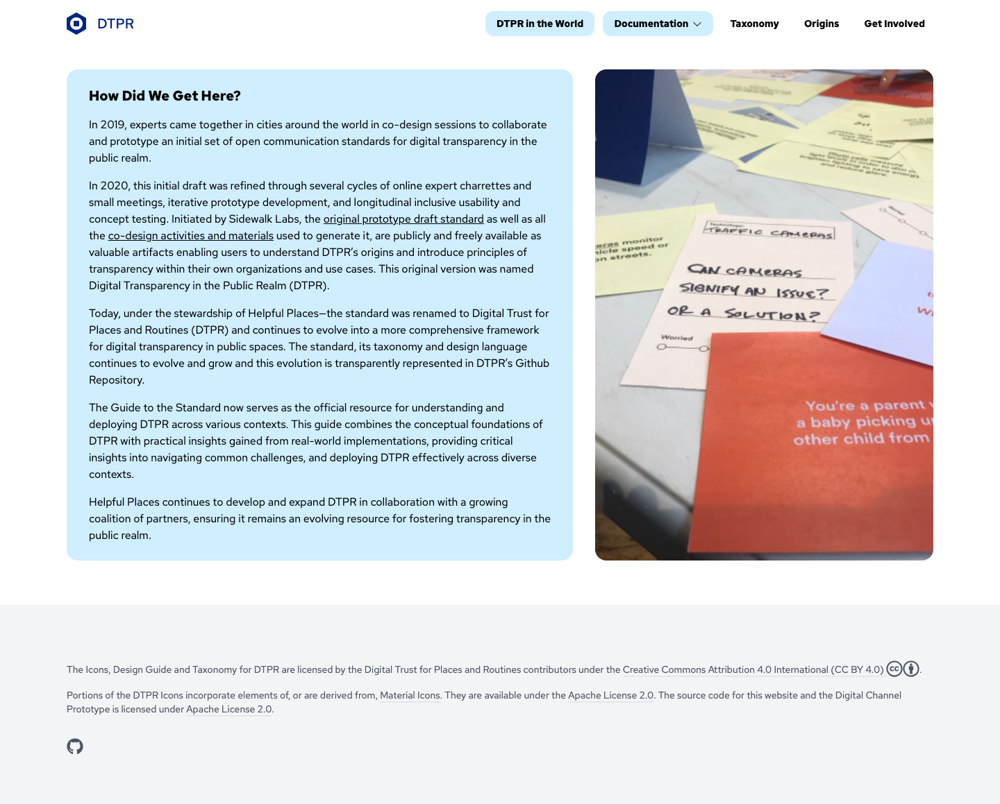
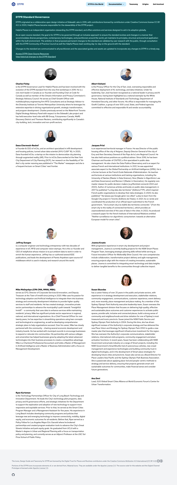
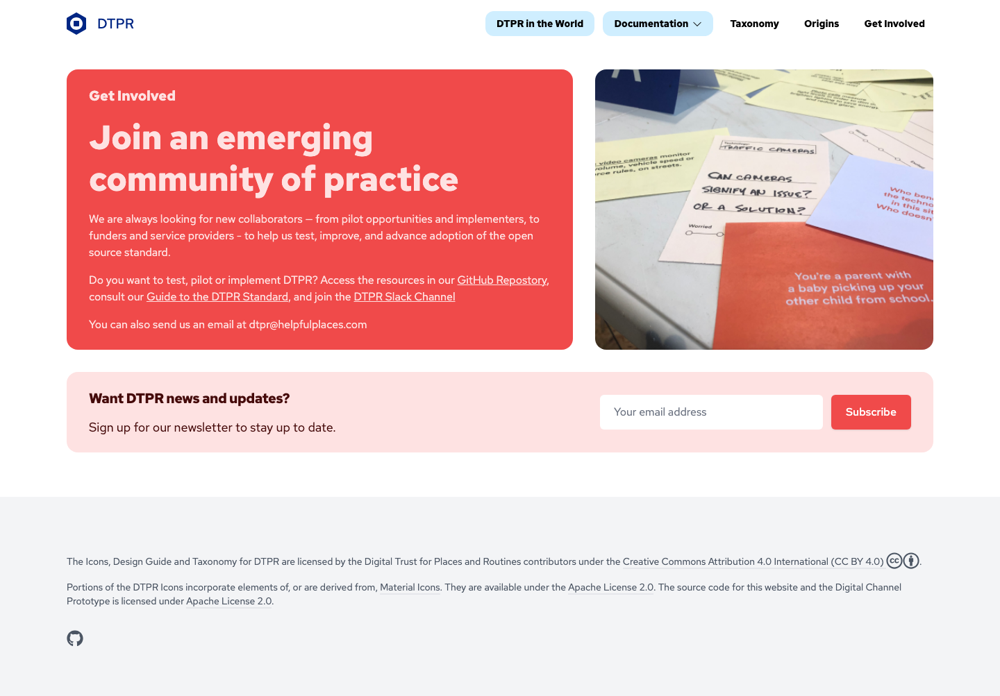
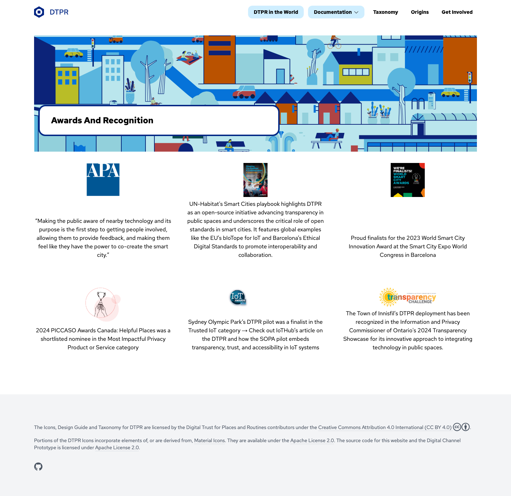
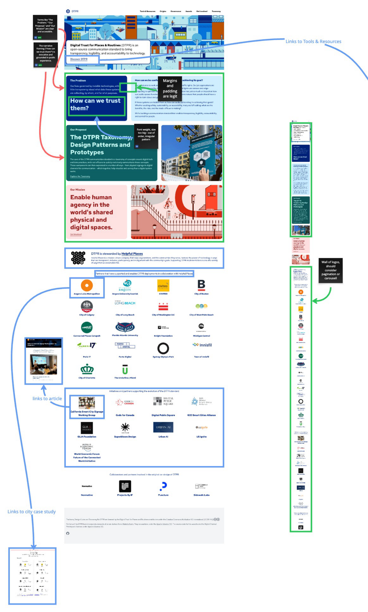
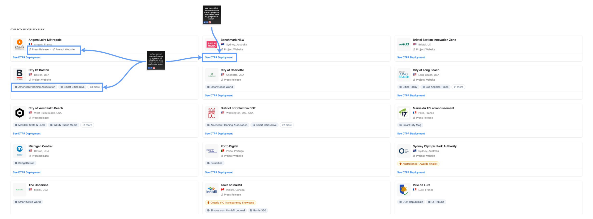

The public standard site
The most-trafficked surface in the DTPR ecosystem. Nuxt + Tailwind. Red Hat Text typography. Navy and teal as the dominant colors, with a Corporate Memphis cityscape hero. 2,300+ unique visitors per year, but with a 35s / 49% scroll-depth bounce that means most visitors never see the proposal.
Hero — Corporate Memphis cityscape

Audit finding. The hero is the largest piece of unused brand real estate in the ecosystem. It works as a "we are approachable" signal, but it does not communicate the standard's actual content. The Assembly Day deck uses a far more refined version of the same grammar (see page 10). The brand book has to decide whether to keep, replace, or repurpose the hero.
Problem / Proposal / Mission — the three-card narrative

#002684 background, white type. The section label is small navy text on white. The card has a slight transparency and appears to overlay the hero illustration.

#0f5153 background — the identifiability color from the vision.dtpr.io system. White type. To the right: a photographic rendering of a DTPR sign deployed in a real urban environment (the Angers or Porto deployment), with a hand scanning the QR. The "Our Proposal" label is in teal on white.

~#a02020 background. White type. The right-hand illustration is a richly-detailed Corporate Memphis street scene: a rollerblader, a cyclist, lampposts, an iron fence, a staircase, a sun in the corner. This is the most visually complex piece of the homepage and the one most clearly out of step with the rest of the brand's hex-based grammar.
Footer — stewardship signature

The taxonomy page — the QR-scan landing

Sub-pages and sub-sites




The old dtpr.io (Phase 1 audit snapshot)
For comparison, here is the older dtpr.io that the Phase 1 audit (May 2026) was based on. Note the full Corporate Memphis hero, the partner logo wall, and the four partner logo lockup with Helpful Places.

dtpr.io.home-desktop-mobile.pdf. The black callouts ("Margins and padding are legit", "Font weight, size too big — out of order, irregular pattern", "Wall of logos, should consider pagination or carousel", "Terms like 'The Problem'... 'Our Proposal'... 'Our Mission' are clear and accessible") are Phase 1 audit annotations, not part of the live site. What the page itself contains: the full Corporate Memphis cityscape hero, the navy "The Problem" card, the teal "Our Proposal" card, the coral "Our Mission" card, the Helpful Places stewardship block, a 20+ partner logo wall organized into deployers / initiatives / original co-design partners, and the CC BY 4.0 footer. The current live site is a reduced version — the partner logo wall has been pulled out of the homepage but appears (with more detail) on the dtpr.guide showcase.

dtpr.guide.all-deployments.pdf · Live at dtpr.guide/landing
Audit findings specific to dtpr.io
Hero illustration contradicts the rest of the brand
The Corporate Memphis cityscape is a Sidewalk Labs / Alphabet holdover. The hex-based grammar in the taxonomy page, the data chain, and the icon library are the standard's own visual language. The hero reads as a different brand.
Heuristics synthesis §6 · Phase 2 brief decision #2
Three-card narrative works
Problem → Proposal → Mission is the strongest structural pattern on the site. It is consistent with the project's content strategy and is reused on sub-pages.
Consolidation plan §1
51% scroll-depth bounce on the homepage
Half of homepage visitors never reach the proposal. The "Start Here" router (Phase 2 deliverable) is the right response, but the hero itself does no role-based routing.
Analytics report v2 · 35s time-on-page, 49% scroll depth
QR-scan landing is a dead end
740 entries/month on /taxonomy/device, 803 exits. The page is technically rich (51 device elements) but contextually empty for someone who just scanned a sign.
Consolidation plan Q1.1 · Matrix gap analysis
No privacy policy on dtpr.io
Newsletter signup and "Get Involved" forms collect data with no privacy policy. A transparency standard without a privacy policy on its own data collection is a credibility-breaking gap for the Vigilant Advocate audience.
Heuristics synthesis H8 · Meeting prep Q5
Footer is the most consistent brand element
CC BY 4.0 license + Helpful Places stewardship + partner logo wall. Appears across all four surfaces. The brand book should make this a required footer component.
All four sites